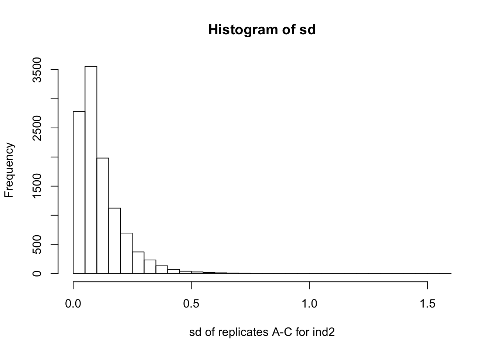

Last updated: 2018-08-07
workflowr checks: (Click a bullet for more information) ✖ R Markdown file: uncommitted changes
The R Markdown file has unstaged changes. To know which version of the R Markdown file created these results, you’ll want to first commit it to the Git repo. If you’re still working on the analysis, you can ignore this warning. When you’re finished, you can run wflow_publish to commit the R Markdown file and build the HTML.
✔ Environment: empty
Great job! The global environment was empty. Objects defined in the global environment can affect the analysis in your R Markdown file in unknown ways. For reproduciblity it’s best to always run the code in an empty environment.
✔ Seed:
set.seed(20180705)
The command set.seed(20180705) was run prior to running the code in the R Markdown file. Setting a seed ensures that any results that rely on randomness, e.g. subsampling or permutations, are reproducible.
✔ Session information: recorded
Great job! Recording the operating system, R version, and package versions is critical for reproducibility.
✔ Repository version: 7836ca3
wflow_publish or wflow_git_commit). workflowr only checks the R Markdown file, but you know if there are other scripts or data files that it depends on. Below is the status of the Git repository when the results were generated:
Ignored files:
Ignored: analysis/._index.Rmd
Ignored: analysis/stem_cache/
Unstaged changes:
Modified: analysis/stem.Rmd
We have gene expression (microarray) data from Burrows et al (2016), “Genetic Variation, Not Cell Type of Origin, Underlies the Majority of Identifiable Regulatory Differences in iPSCs”.
There are four individuals - Ind1, Ind2, Ind3, Ind4. Each individual has four samples types - Fibroblast, LCL, F-iPSC, L-iPSC. There are three replicates of the L-iPSCs A-C.
L-iPSC referes to iPSCs derived from LCLs, F-iPSC refers to iPSCs derived from Fibroblasts.
They were interested in the proportion of variation explained by cell type of origin vs the proportion of variation explained by individual in the iPSCs. They performed a linear mixed model with a fixed effect for cell type of origin (ie L-iPSC vs F-iPSC) and a random effect for individual. This model did no use the LCLs or the Fibroblasts from these individuals.
We use the naive F-test (ANOVA) and FASH to analyze the proportion of variance explained by cell type or individual. Specifically, we assume that gene expression \(y_{gij}\) comes from the following model: \[y_{gij} = \mu_g+\beta_{g,c(i)}+\gamma_{g,d(j)}+e_{gij},\] where \(g,i,j\) are the indices for gene, individual and cell type respectively. \(\beta\) and \(\gamma\) are random effects for individuals and celltypes respectively. Suppose \(\beta_{g,c(i)}\sim N(0,v_{g}^{(ind)}\), \(\gamma_{g,c(i)}\sim N(0,v_{g}^(ct)\) and \(e_{gij}\sim N(0, v_{g}^{(err)})\), we are interested in estimating the “PVE”s defined as follows: \[PVE_g^{(ind)}:=\frac{v_{g}^{(ind)}}{v_{g}^{(ind)}+v_{g}^{(ct)}+v_{g}^{(err)}},\] \[PVE_g^{(ct)}:=\frac{v_{g}^{(ct)}}{v_{g}^{(ind)}+v_{g}^{(ct)}+v_{g}^{(err)}}.\]
Below are the R functions for our data analysis:
library(limma)
library(qvalue)
library(ashr)
# naive F test for a single gene
get_fstat = function(y,condition1,condition2){
fit = lm(y~condition1+condition2)
fstat1 = anova(fit)$F[1]
fstat2 = anova(fit)$F[2]
MST1 = anova(fit)$M[1]
MST2 = anova(fit)$M[2]
MSE = anova(fit)$M[3]
pval1 = unlist(anova(fit)["Pr(>F)"])[1]
pval2 = unlist(anova(fit)["Pr(>F)"])[2]
res = c(fstat1,fstat2,MST1,MST2,MSE,pval1,pval2)
names(res) = c("fstat1","fstat2","MST1","MST2","MSE","pval1","pval2")
return(res)
}
# Variance ratio = var_trt/var_err
# Variance ratio from the raw MSTs & MSEs
vr_ftest = function(nsamp,MST,MSE){
sigma.c2.hat = pmax(0,(MST-MSE)/nsamp)
sigma.e2.hat = MSE
return(sigma.c2.hat/sigma.e2.hat)
}
# Variance ratio = var_trt/var_err
# logalpha = (1+nsamp*var_trt/var_err)
# So: VR = (exp(logalpha)-1)/nsamp
vr_plugin = function(nsamp,fashobj){
(exp(fashobj$result$PosteriorMean)-1)/nsamp
}
# main function for computing the PVEs
pve_analysis = function(data){
celltype1 = factor(rep(c("F","L"), each=4))
individual1 = factor(rep(1:4, 2))
design1 = model.matrix(~celltype1+individual1)
# naive F tests
ftests = apply(data,1,get_fstat,condition1=celltype1,condition2=individual1)
vr.ct.ftest = vr_ftest(4, ftests["MST1",],ftests["MSE",])
vr.ind.ftest = vr_ftest(2, ftests["MST2",],ftests["MSE",])
# fash
lim = lmFit(data, design=design1)
lim.ct = eBayes(lim[,2])
Fstats.ct = lim.ct$F # shrunk F stats
Fpval.ct = lim.ct$F.p.value
fash.ct = ash(log(Fstats.ct),1,
lik=lik_logF(df1=1,df2=lim.ct$df.total[1]),mixcompdist="+uniform")
vr.ct.fash = vr_plugin(4, fash.ct)
lim.ind = eBayes(lim[,3:5])
Fstats.ind = lim.ind$F # shrunk F stats
Fpval.ind = lim.ind$F.p.value
fash.ind = ash(log(Fstats.ind),1,
lik=lik_logF(df1=3,df2=lim.ind$df.total[1]),mixcompdist="+uniform")
vr.ind.fash = vr_plugin(2, fash.ind)
# compute PVEs from variance ratios
pve.ct.fash = vr.ct.fash/(vr.ct.fash+vr.ind.fash+1)
pve.ct.ftest = vr.ct.ftest/(vr.ct.ftest+vr.ind.ftest+1)
pve.ind.fash = vr.ind.fash/(vr.ct.fash+vr.ind.fash+1)
pve.ind.ftest = vr.ind.ftest/(vr.ct.ftest+vr.ind.ftest+1)
# boxplot
# boxplot(pve.ct.fash, pve.ct.ftest, pve.ind.fash, pve.ind.ftest,
# names=c("ct.fash","ct.ftest","ind.fash","ind.ftest"),
# main="PVE of celltypes (ct) and individuals (ind)")
return(list(pve.ind.ftest=pve.ind.ftest, pve.ind.fash=pve.ind.fash,
pve.ct.ftest=pve.ct.ftest, pve.ct.fash=pve.ct.fash))
}Note that this dataset has unbalanced design (three L-iPSC replicates but just one F-iPSC sample for each individual). However it is not straightforward to use FASH on unbalanced dataset for PVE analysis. Hence we choose an ad-hoc way: each time we simply use one of the three L-iPSC replicates to form a balanced dataset, and compare the results of three trials. Fortunately the three trials give very similar results.
# load data
geneexp = read.delim("data/OriginGeneExpression_Normalized.txt")
# just use L-iPSC replicate A
geneexp.A = geneexp[,c("Ind1.F.iPSC","Ind2.F.iPSC","Ind3.F.iPSC","Ind4.F.iPSC",
"Ind1.L.iPSC.A","Ind2.L.iPSC.A","Ind3.L.iPSC.A","Ind4.L.iPSC.A")]
# just use L-iPSC replicate B
geneexp.B = geneexp[,c("Ind1.F.iPSC","Ind2.F.iPSC","Ind3.F.iPSC","Ind4.F.iPSC",
"Ind1.L.iPSC.B","Ind2.L.iPSC.B","Ind3.L.iPSC.B","Ind4.L.iPSC.B")]
# just use L-iPSC replicate C
geneexp.C = geneexp[,c("Ind1.F.iPSC","Ind2.F.iPSC","Ind3.F.iPSC","Ind4.F.iPSC",
"Ind1.L.iPSC.C","Ind2.L.iPSC.C","Ind3.L.iPSC.C","Ind4.L.iPSC.C")]
A = pve_analysis(geneexp.A)
B = pve_analysis(geneexp.B)
C = pve_analysis(geneexp.C)
# show distribution of pve estimates by fash or F-test
boxplot(A$pve.ct.fash, A$pve.ct.ftest, A$pve.ind.fash, A$pve.ind.ftest,
names=c("CT(fash)","CT(F-test)","IND(fash)","IND(F-test)"),
ylab="Estimated PVE",
main="PVE estimates (with L-iPSC A)")boxplot(B$pve.ct.fash, B$pve.ct.ftest, B$pve.ind.fash, B$pve.ind.ftest,
names=c("CT(fash)","CT(F-test)","IND(fash)","IND(F-test)"),
ylab="Estimated PVE",
main="PVE estimates (with L-iPSC B)")boxplot(C$pve.ct.fash, B$pve.ct.ftest, C$pve.ind.fash, C$pve.ind.ftest,
names=c("CT(fash)","CT(F-test)","IND(fash)","IND(F-test)"),
ylab="Estimated PVE",
main="PVE estimates (with L-iPSC C)")Burrows et al (2016) simply uses the limma DE pipeline and claims that only one gene is classified as DE between L-iPSC and F-iPSC. They also use simple ANOVA \(R^2\) to record the variance explained by celltypes or individuals (note that \(R^2\) is different from our defined “PVE” here) and conclude that “individual genetic background captures a much larger proportion of gene regulatory variation than cell type of origin”.
We see that the FASH results are generally consistent with their results, that almost all genes have almost zero celltype PVEs. Compared to the raw F-test PVE estimates (which are pretty noisy), I think FASH gives much more intuitive results.
According to FASH results, both datasets with L-iPSC replicate A or C suggest that gene “ENSG00000198825” is differentially expressed between L-iPSC and F-iPSC (FDR=0.05), but the dataset with L-iPSC replicate B does not any give significant DE genes (FDR=0.05). We check this gene:
geneexp[which.max(A$pve.ct.fash),] Ind1.F.iPSC Ind2.L.iPSC.C Ind3.L.iPSC.B Ind1.LCL
ENSG00000198825 7.97047 6.902654 6.945877 7.151865
Ind4.L.iPSC.C Ind2.L.iPSC.B Ind4.L.iPSC.A Ind1.Fibroblast
ENSG00000198825 6.920788 8.395853 6.922644 7.12799
Ind1.L.iPSC.A Ind4.Fibroblast Ind2.LCL Ind3.F.iPSC
ENSG00000198825 6.997868 7.122821 7.131635 8.029191
Ind2.Fibroblast Ind3.LCL Ind2.L.iPSC.A Ind4.LCL
ENSG00000198825 7.067461 7.097692 6.900132 7.257512
Ind3.Fibroblast Ind1.L.iPSC.C Ind2.F.iPSC Ind3.L.iPSC.A
ENSG00000198825 7.115315 7.044821 7.757269 7.045194
Ind1.L.iPSC.B Ind4.L.iPSC.B Ind3.L.iPSC.C Ind4.F.iPSC
ENSG00000198825 6.969298 6.974893 7.049418 7.896776For this gene, individual 2 L-iPSC replicate B’s gene expression level is much higher (>1.4) than that of replicates A and C. Compared to the typical gene expression variation within L-iPSC replicates, this seems somewhat suspicious…?
hist(apply(geneexp[,c("Ind2.L.iPSC.A","Ind2.L.iPSC.B","Ind2.L.iPSC.C")],1,sd), 30,
xlab="sd of replicates A-C for ind2",
main="Histogram of sd")
| Version | Author | Date |
|---|---|---|
| 7836ca3 | mengyin | 2018-08-07 |
sessionInfo()R version 3.5.0 (2018-04-23)
Platform: x86_64-apple-darwin15.6.0 (64-bit)
Running under: macOS High Sierra 10.13.3
Matrix products: default
BLAS: /Library/Frameworks/R.framework/Versions/3.5/Resources/lib/libRblas.0.dylib
LAPACK: /Library/Frameworks/R.framework/Versions/3.5/Resources/lib/libRlapack.dylib
locale:
[1] en_US.UTF-8/en_US.UTF-8/en_US.UTF-8/C/en_US.UTF-8/en_US.UTF-8
attached base packages:
[1] stats graphics grDevices utils datasets methods base
other attached packages:
[1] ashr_2.2-8 qvalue_2.12.0 limma_3.36.2
loaded via a namespace (and not attached):
[1] Rcpp_0.12.18 compiler_3.5.0 pillar_1.3.0
[4] git2r_0.23.0 plyr_1.8.4 workflowr_1.1.1
[7] bindr_0.1.1 iterators_1.0.10 R.methodsS3_1.7.1
[10] R.utils_2.6.0 tools_3.5.0 digest_0.6.15
[13] lattice_0.20-35 evaluate_0.11 tibble_1.4.2
[16] gtable_0.2.0 pkgconfig_2.0.1 rlang_0.2.1
[19] foreach_1.4.4 Matrix_1.2-14 rstudioapi_0.7
[22] parallel_3.5.0 yaml_2.2.0 bindrcpp_0.2.2
[25] stringr_1.3.1 dplyr_0.7.6 knitr_1.20
[28] tidyselect_0.2.4 rprojroot_1.3-2 grid_3.5.0
[31] glue_1.3.0 R6_2.2.2 rmarkdown_1.10
[34] reshape2_1.4.3 purrr_0.2.5 ggplot2_3.0.0
[37] magrittr_1.5 whisker_0.3-2 MASS_7.3-50
[40] codetools_0.2-15 splines_3.5.0 backports_1.1.2
[43] scales_0.5.0 htmltools_0.3.6 assertthat_0.2.0
[46] colorspace_1.3-2 stringi_1.2.4 pscl_1.5.2
[49] doParallel_1.0.11 lazyeval_0.2.1 munsell_0.5.0
[52] truncnorm_1.0-8 SQUAREM_2017.10-1 crayon_1.3.4
[55] R.oo_1.22.0 This reproducible R Markdown analysis was created with workflowr 1.1.1